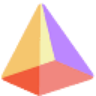
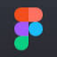

n
nele.aiДругое
«nele.ai» представлен в разделе «Другое». При выборе проверьте нужную операцию и условия работы с результатом.
Раздел «Другое»: варианты ИИ для этой задачи, описания возможностей и переходы к обзорам. Сравните несколько решений на одинаковом примере.
Возьмите небольшую повседневную задачу и опишите проверяемый результат вместо общей просьбы помочь. Инструкция промпт-инженера помогает уточнить входные материалы и ограничения; начните с текста, который можно сравнить с вашими исходными фактами.
Помоги составить запрос для памятки посетителям мастерской. Есть правила записи и адрес. Нужен короткий текст с порядком действий. Укажи, какие сведения добавить, а отсутствующее не придумывай.

«nele.ai» представлен в разделе «Другое». При выборе проверьте нужную операцию и условия работы с результатом.

«Prezo AI» собирает материал для презентации. «Prezo AI» также помогает собрать сайт или веб-приложение.
Для «Privacy AI App» сначала определите свою задачу и требуемый результат. Карточка относится к направлению «Другое».
Сравнивать «Sentiance» с другими инструментами раздела «Другое» удобнее на одинаковом исходном материале.
Для «SocialFinder.ai» сначала определите свою задачу и требуемый результат. Карточка относится к направлению «Другое».
Для «Tripio : AI Travel Planner» сначала определите свою задачу и требуемый результат. Карточка относится к направлению «Другое».
Сравнивать «YFJ Management, Inc.» с другими инструментами раздела «Другое» удобнее на одинаковом исходном материале.
Zernio предоставляет API для управления социальными сетями с помощью ИИ. Подходит для подключения этих операций к собственным приложениям.
«AIBypass» перерабатывает формулировки написанного текста.
Сравнивать «Animood» с другими инструментами раздела «Другое» удобнее на одинаковом исходном материале.
Apowersoft объединяет инструменты редактирования видео и записи экрана с дополнительными средствами работы с файлами. В наборе описаны восстановление данных и сжатие, а также прямая трансляция. Продукт предназначен для разных цифровых задач, позволяя выбирать нужную операцию внутри общего комплекта инструментов.
Для «Aura» сначала определите свою задачу и требуемый результат. Карточка относится к направлению «Финансы».
Сравнивать «Binarly | AI-Powered Firmware Supply Chain Security Platform» с другими инструментами раздела «Другое» удобнее на одинаковом исходном материале.
Couple Goals AI создаёт изображения пары с романтическим сюжетом. Сервис ориентирован на совместные портреты и парные фото.
Для «CrossValidation.ai» сначала определите свою задачу и требуемый результат. Карточка относится к направлению «Другое».
«Faceplugin» работает с задачами проверки личности.
Для «Free Network Monitor» сначала определите свою задачу и требуемый результат. Карточка относится к направлению «Другое».
«Gift Wizard» подбирает предложения для выбора подарка.
«HeyHaddock» помогает подготовить маршрут поездки.
Сравнивать «Hush Privacy AI» с другими инструментами раздела «Другое» удобнее на одинаковом исходном материале.
«Jodi’sChoice» представлен в разделе «Другое». При выборе проверьте нужную операцию и условия работы с результатом.
Для «LovableGames.com» сначала определите свою задачу и требуемый результат. Карточка относится к направлению «Другое».
«More Episodes!» представлен в разделе «Создание контента». При выборе проверьте нужную операцию и условия работы с результатом.
Сравнивать «Movie.so» с другими инструментами раздела «Другое» удобнее на одинаковом исходном материале.
Сравнивать «nomi.cloud» с другими инструментами раздела «Другое» удобнее на одинаковом исходном материале.
«PartyPlanner» представлен в разделе «Другое». При выборе проверьте нужную операцию и условия работы с результатом.
«PicAisso.xyz» представлен в разделе «Другое». При выборе проверьте нужную операцию и условия работы с результатом.
Для «Prefit.AI» сначала определите свою задачу и требуемый результат. Карточка относится к направлению «Другое».
«RentalBuddy» представлен в разделе «Другое». При выборе проверьте нужную операцию и условия работы с результатом.
Сравнивать «WolongAI» с другими инструментами раздела «Другое» удобнее на одинаковом исходном материале.
«Wonderslide AI» представлен в разделе «Другое». При выборе проверьте нужную операцию и условия работы с результатом.
Сравнивать «Worlds Beyond NFT» с другими инструментами раздела «Другое» удобнее на одинаковом исходном материале.
Сравнивать «Write Me A Prayer» с другими инструментами раздела «Вдохновение» удобнее на одинаковом исходном материале.
Для «AI ShieldNet» сначала определите свою задачу и требуемый результат. Карточка относится к направлению «Другое».
Для «AI4CRAFTS» сначала определите свою задачу и требуемый результат. Карточка относится к направлению «Другое».
«aiatlas.app» представлен в разделе «Другое». При выборе проверьте нужную операцию и условия работы с результатом.
«ArcaneLand» представлен в разделе «Чат-боты и ассистенты». При выборе проверьте нужную операцию и условия работы с результатом.
Сравнивать «Atlancer.ai» с другими инструментами раздела «Другое» удобнее на одинаковом исходном материале.
«Beagle Security» представлен в разделе «Другое». При выборе проверьте нужную операцию и условия работы с результатом.
Для «eternity.ac» сначала определите свою задачу и требуемый результат. Карточка относится к направлению «Другое».

«Figma Slides» собирает материал для презентации.
Сравнивать «Getgud.io» с другими инструментами раздела «Другое» удобнее на одинаковом исходном материале.
Сравнивать «GPTSidekick» с другими инструментами раздела «Другое» удобнее на одинаковом исходном материале.
«hCaptcha (botstop.com)» представлен в разделе «Другое». При выборе проверьте нужную операцию и условия работы с результатом.
Сравнивать «Hubble IQ» с другими инструментами раздела «Другое» удобнее на одинаковом исходном материале.
Invoxia предназначен для отслеживания местоположения транспорта, домашних животных и вещей. Среди примеров представлены устройство MiniTailz для собак, связь через мобильную сеть и настраиваемые IoT-решения. Продукт объединяет средства мониторинга объекта с передачей сведений о его положении через соответствующее подключённое устройство.
Для «Local Buddy» сначала определите свою задачу и требуемый результат. Карточка относится к направлению «Другое».
Для «Makir.ai» сначала определите свою задачу и требуемый результат. Карточка относится к направлению «Другое».
Страница 4 из 8